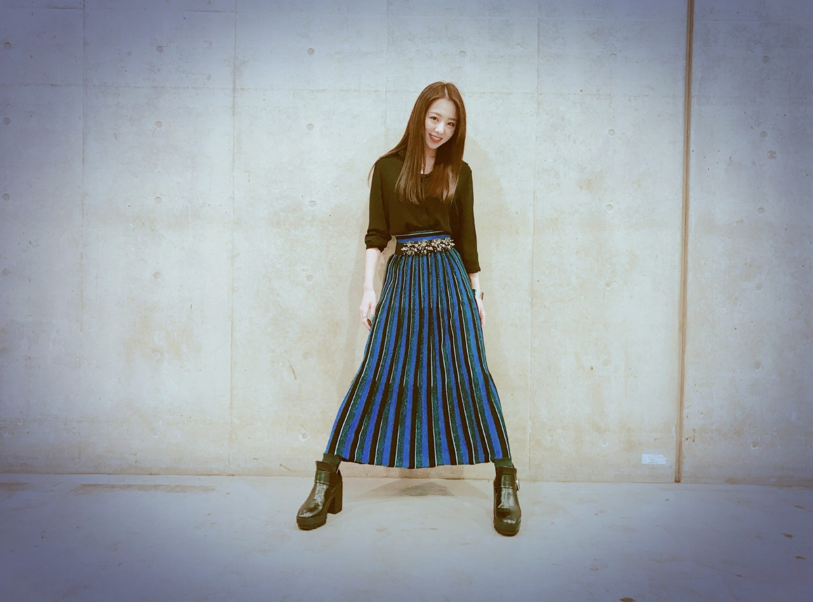
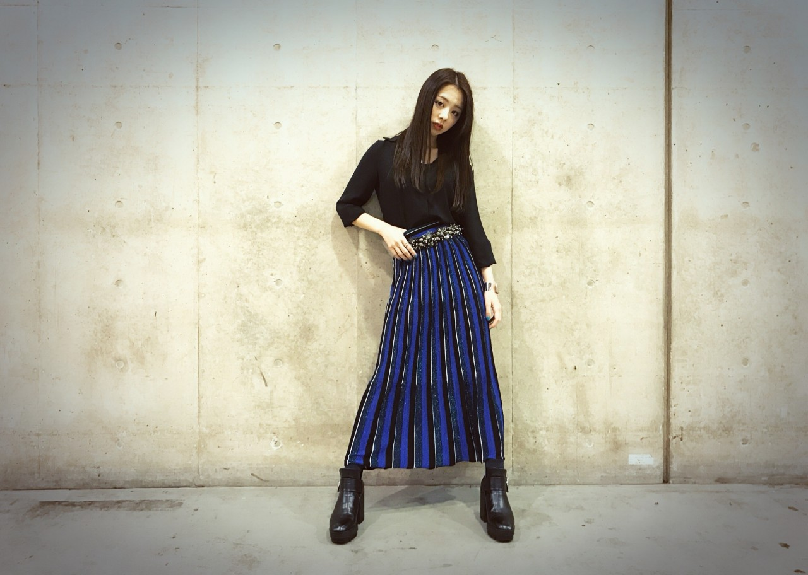
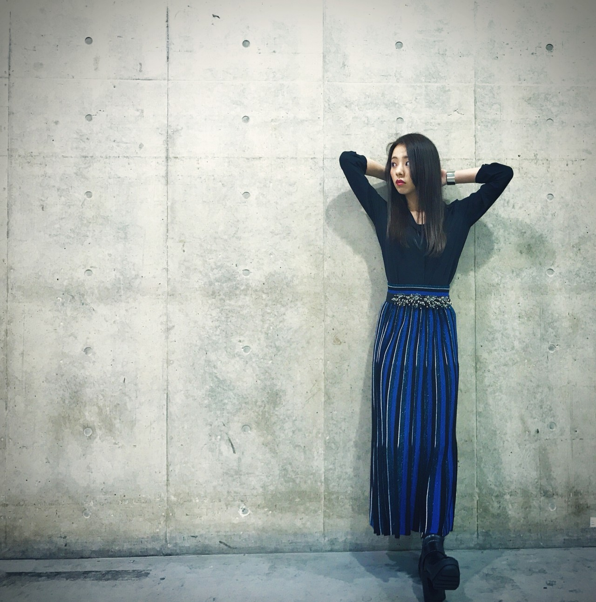
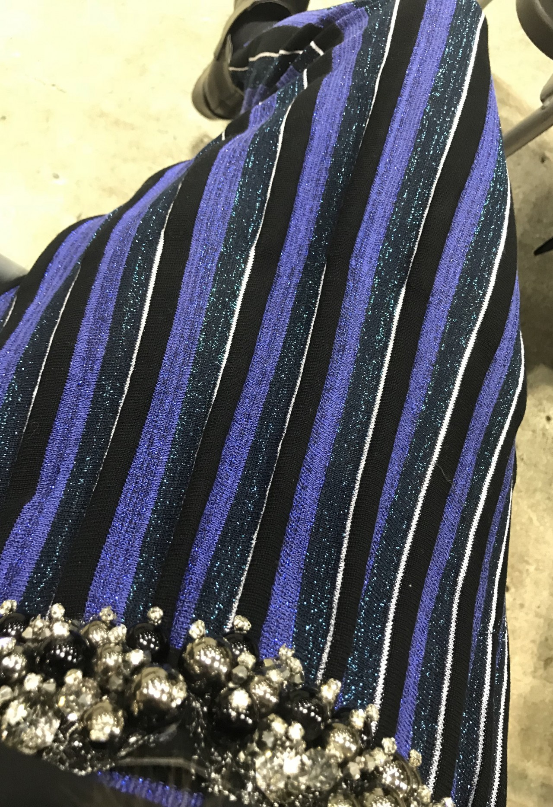

こんにちは、川村真洋です！
先日、卒業発表を致しました。
その後、沢山の方からメッセージを頂きました...
寂しい、卒業しないで、ろってぃーソロデビューするの⁈、早くろってぃーの歌聴きたい‼︎卒業後もずっと応援し続ける‼︎、、、
そんな言葉を沢山頂きました。
『私は、こんなにも沢山の方に愛されていたんだ...』そう感じました。
本当に本当にありがとうございます。
皆様は、最後の最後まで背中を押してくれて、どんな時も元気や勇気をくれる。
卒業発表をしてから、色々な事に対する有り難みを更に強く感じています。
本当に皆様の事が大好きです。
そして、先日の握手会。
沢山の方とお話しできました！
でも、もっとお話ししたい。
皆様に会える事が楽しいから。
物足りないよ。
寒い中足を運んで下さりありがとうございます♡
私服です。



ブルーのスカート。
ベルトもちょいと面白い。

メンバーが、優しい顔で「まに～」「まひろさ～ん」って言うて近寄って来てくれるのが可愛いし嬉しい♡
ずーに会うといつも「ろっちでーす！」って言うからね、最近はろっちでーすの後に「ずーやでー。」って返事する様になりました♡ よう分からんな 笑
川村 真洋。